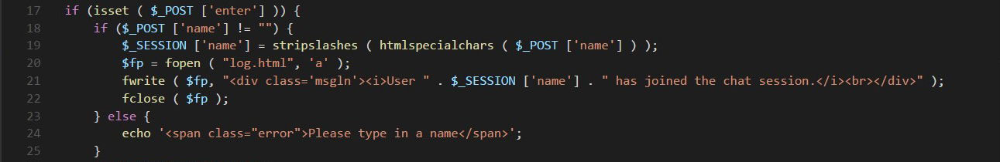
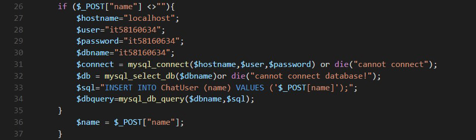
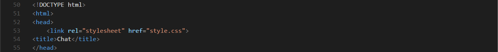
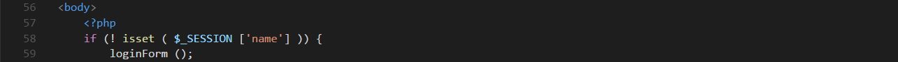
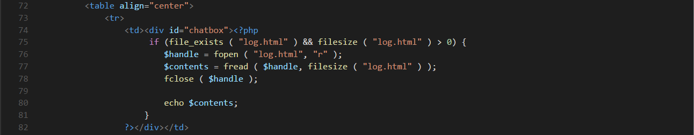
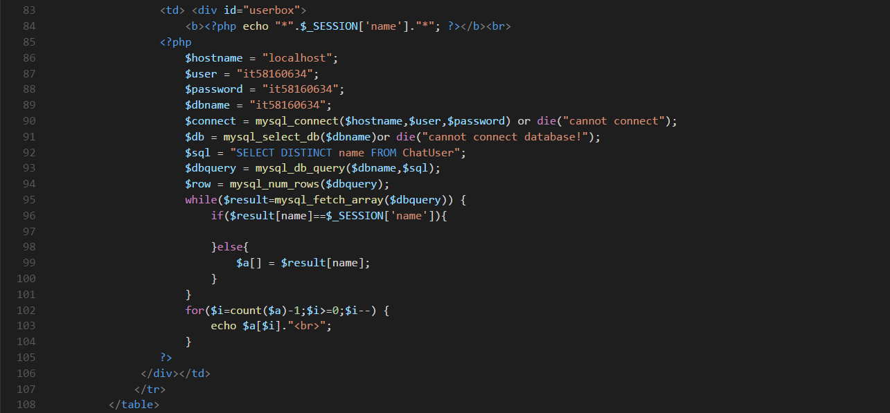
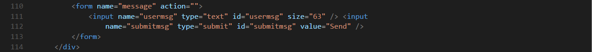
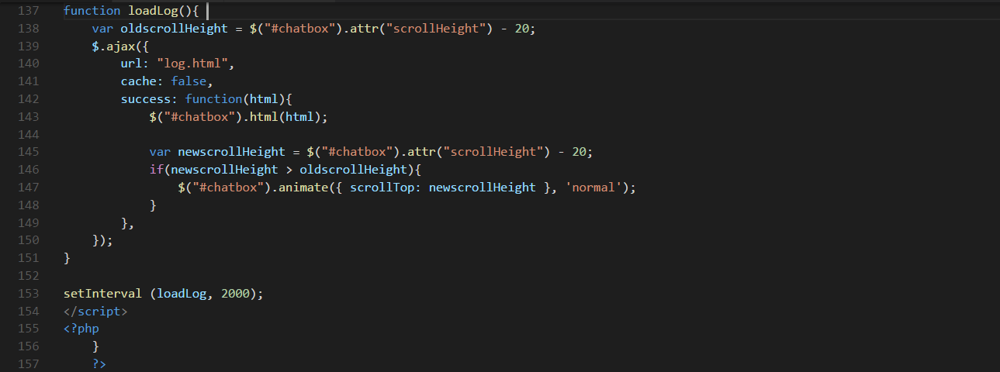

เราเริ่มจากการสร้าง index.php
ใช้ tag PHP สร้าง login from เพื่อถามชื่อและอีเมล์ เก็บข้อมูลในรูปแบบ text และ email ตามลำดับ ก่อนจะเข้าหน้าแชท
ตรวจสอบว่า name ที่รับมาไม่ใช่ค่าว่าง ถ้าเป็นค่าว่าง จะเตือนว่า Please type in a name แล้วพิมพ์ชื่อและอีเมลล์ใหม่
เช็คว่า $_POST["name"] ไม่เท่ากับ ค่าว่าง แล้วติดต่อกับฐานข้อมูลเพื่อเพิ่มชื่อลงไป
สร้าง
ก่อนที่เราจะสร้างแท็ก html เรามาสร้าง stylesheet กันก่อนโดยใช้ชื่อว่า
ใน head จะเขียน title และเขียน link ไปยัง css stylesheet (style.css)
ส่วนของ body html เริ่มด้วย tag php ถ้า login ไม่สำเร็จก็จะเข้าหน้า loginForm ใหม่
แต่ถ้า login สำเร็จ ก็จะเข้ามาหน้าแชทรูม สร้างตารางตามรูปแบบที่กำหนดไว้ใน style.css
สร้าง ตารางโดยแบ่งเป็นสองฝั่ง คือ ฝั่ง chatbox และฝั่ง userbox
ตรวจสอบว่ามีไฟล์ log.html และขนาดมากกว่า 0 จากนั้นจึงอ่านข้อมูลในไฟล์และแสดงออกทางหน้าจอ
ขวามือของ chatbox จะแสดงชื่อของผู้ใช้ทั้งหมดโดยจะแสดงชื่อของเราโดยมี * ข้างหน้าชื่อและท้ายชื่อ
สร้างฟอร์มส่งข้อความและปุ่ม submit
เรียกใช้ ajax libraly
เมื่อกดปุ่ม exit จะมีป็อปอัพขึ้นมาว่า Are you sure you want to end the session?
ถ้าใช่ก็จะกลับสู่หน้า login อีกครั้ง
ใช้ jQuery เก็บค่าอะไรก็ตามที่ผู้ใช้พิมพ์เข้ามา เก็บไว้ในตัวแปร clientmsg
ส่ง POST request ไปยังไฟล์ post.php มันจะโพสข้อความที่ผู้ใช้เข้ามาหรือ save ไว้ในตัวแปร clientmsg
โหลดไฟล์ที่เก็บบันทึกการแชท
เพิ่ม scripts มาตอนท้ายเพื่อให้โหลดหน้า page เร็วขึ้น
และลิ้งค์กับ Google jQuery CDN เพื่อใช้ jQuery library